« Ceux que nous avons aimés ne nous quittent jamais vraiment ; ils continuent de vivre dans nos cœurs, nos souvenirs et nos prières. »
Il est des êtres dont le passage sur terre laisse une empreinte indélébile, et dont le souvenir traverse les générations sans jamais s'effacer.
35 années après le rappel à Dieu de M. Jean-Gabriel Makani, survenu le 22 février 1992, et 10 années après celui de Mme Brigitte Ngo Mboua, survenu le 12 janvier 2017, la famille Makani souhaite honorer leur mémoire à travers une célébration commémorative placée sous le signe de l'amour, de la reconnaissance et du recueillement.
À cette occasion, la famille Makani a l'honneur de vous convier à ces moments de communion et de partage, afin qu'ensemble nous puissions raviver les souvenirs, célébrer les vies qui nous ont marqués et rendre un hommage digne à ces deux êtres chers.
Votre présence, vos prières et votre affection seront pour la famille un précieux témoignage de solidarité et de soutien.
Car si le temps emporte les années, il n'efface jamais les belles âmes ni les traces qu'elles laissent dans nos vies.
Le programme détaillé des deux journées sera communiqué prochainement.
La famille Makani vous attend nombreux pour célébrer ensemble leur mémoire. Que leurs âmes reposent en paix.
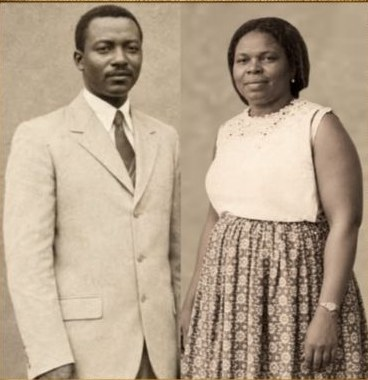
Ce livre n'est pas l'histoire d'une fin, mais le récit d'une magnifique histoire. Nous sommes réunis non pas pour pleurer leur départ, mais pour célébrer la lumière qu'ils ont laissée dans nos vies.
Nos parents, Brigitte et Jean-Gabriel, ont marché main dans la main, guidés par un amour profond et une générosité sans faille. Ensemble, ils ont bâti des liens, partagé des éclats de rire et surmonté les tempêtes avec une grâce inspirante. Leur existence fut un hymne à la vie, à la famille et à l'amitié.
À travers ces pages, vous découvrirez quelques dates importantes de leur parcours. Des sacrifices inestimables consentis, des journées interminables de labeur et de persévérance endurées, les luttes contre les démons et les problèmes sociaux rencontrés, et enfin les valeurs transmises et léguées aux enfants.
Que ces pages soient un doux rappel que l'amour ne disparaît jamais. Il change simplement de forme. Merci d'avoir fait partie de leur voyage et de continuer à faire vivre leur mémoire par vos sourires et vos partages.
« Il y a quelque chose de plus fort que la mort, c'est la présence des absents dans la mémoire des vivants. »Jean d'Ormesson, de l'Académie française
Leurs vies
Et si Brigitte et Gabriel vous étaient contés…
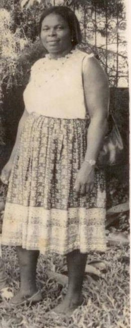
Brigitte Ngo Mboua
Née le 6 mars 1941 à Makak, Kaya
Cinquième d'une fratrie de dix enfants, elle est issue d'une famille chrétienne. Son père, Étienne Mboua, est catéchiste, et sa mère, Perpétue Ngo Ngan, est femme au foyer comme la plupart de ses congénères.
Brigitte est inscrite très tard à l'école catholique. Chez les Mboua, l'école est réservée prioritairement aux garçons. C'est ainsi qu'elle est appelée plusieurs fois à interrompre sa scolarité pour garder ses petits frère et sœur à leur naissance (Michel Um et Claire Ngo Mboua).
Notre grand-mère, Perpétue Ngo Ngan, n'avait pas une grande santé. Brigitte sera même obligée de rejoindre ses grandes sœurs Marie et Marguerite, nouvellement mariées, dans leurs foyers respectifs, toujours pour s'occuper des enfants.
Elle finira quand même son enseignement primaire, et entamera des cours de couture et d'aide-soignante à l'école ménagère de Makak.
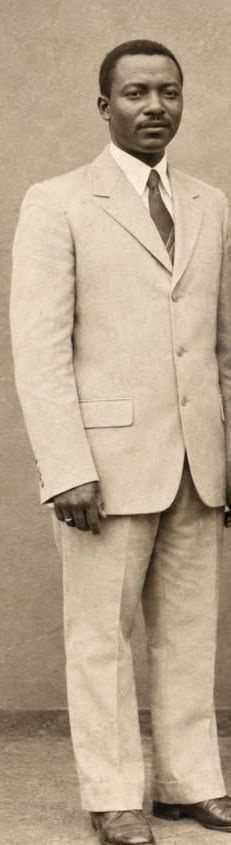
Jean-Gabriel Makani
« Makouss », le Petit Blanc des rails, Nkana Minkon Né le 11 février 1938 ici, à Song Ndjiki (par Otélé)
Fils de Jean Makani et de Fidèle Scholastique Ngo Tonye, il est le deuxième d'une fratrie de six enfants.
Il entre à l'école primaire Saint-Pie-X de Hikoa Maen, où il obtient le CEPE en 1953, à l'âge de 15 ans. Il est reçu la même année au concours d'entrée au petit séminaire d'Édéa.
Il est renvoyé du séminaire en 1957, en classe de 3e, en pleine année scolaire, alors qu'il prépare le BEPC. Il rejoint son grand frère Pierre Ndjiki à Douala, où il passe son examen avec succès. Il rentre ensuite à Song Ndjiki, où il est rapidement recruté, la même année, par les missionnaires de Hikoa Maen comme maître d'école primaire. Son père ne souhaitait pas qu'il rejoigne la contestation politique qui faisait rage à Douala.
Parallèlement à son travail d'instituteur, Jean-Gabriel poursuit ses études, par correspondance cette fois, comme cela se faisait à l'époque. Elles sont couronnées par l'obtention du probatoire en 1965, puis du baccalauréat l'année suivante, en 1966. Nommé directeur d'école, il exerce un peu partout dans le grand diocèse de Yaoundé jusqu'en 1968. Il est ensuite appelé par Monseigneur Jean Zoa à enseigner au collège François-Xavier Vogt. Monseigneur avait besoin d'enseignants qualifiés pour ses collèges d'enseignement secondaire, et il puisa d'abord dans ses effectifs.
En 1971, il s'inscrit à la faculté des lettres et sciences humaines de l'Université de Yaoundé et obtient une licence d'histoire-géographie. En 1974, il intègre l'École normale supérieure et en sort nanti d'un CAPES d'histoire-géographie. La même année, il commence sa carrière comme professeur des lycées, puis comme responsable d'établissement, d'abord à Sangmélima, puis au lycée Leclerc à Yaoundé, au lycée de New-Bell à Douala, etc.
Repères
Les dates clés
193811 février
Naissance de Jean-Gabriel à Song Ndjiki.
19416 mars
Naissance de Brigitte à Makak, Kaya.
1953
Jean-Gabriel obtient le CEPE et entre au petit séminaire d'Édéa.
1957
BEPC à Douala, puis premier poste de maître d'école à Hikoa Maen.
196027 février
Mariage de Brigitte et Jean-Gabriel à Hikoa Maen.
1966
Baccalauréat obtenu par correspondance, après le probatoire en 1965.
1968
Professeur au collège François-Xavier Vogt, à l'appel de Mgr Jean Zoa.
1974
CAPES d'histoire-géographie à l'École normale supérieure.
199222 février
Rappel à Dieu de Jean-Gabriel.
201712 janvier
Rappel à Dieu de Brigitte.
202715 et 16 janvier
La famille se réunit à Song Ndjiki pour honorer leur mémoire.
Leur histoire
Une vie à deux
Rencontre et mariage
En 1959, Jean-Gabriel enseigne encore à l'école Saint-Pie-X de Hikoa Maen et montre de très bons talents de pédagogue, qui font tourner les têtes des jeunes apprenantes. Les prêtres exigent de son père qu'il lui trouve une épouse.
Son père en parle à sa petite sœur Élisabeth, qui lui propose une jeune fille qu'elle connaît et qu'elle trouve très belle, courageuse, travailleuse et discrète, du côté de Kaya, à Makak. Sa mère, Fidèle Ngo Tonye, se rend à Kaya à la rencontre de la jeune Brigitte. Elle en parle ensuite à son fils, qui à son tour se rend à Kaya pour faire sa connaissance. Le père de Brigitte étant catéchiste comme celui de Jean-Gabriel, l'union est très vite scellée. Les deux jeunes gens se marient devant Dieu et les hommes le 27 février 1960 à Hikoa Maen.
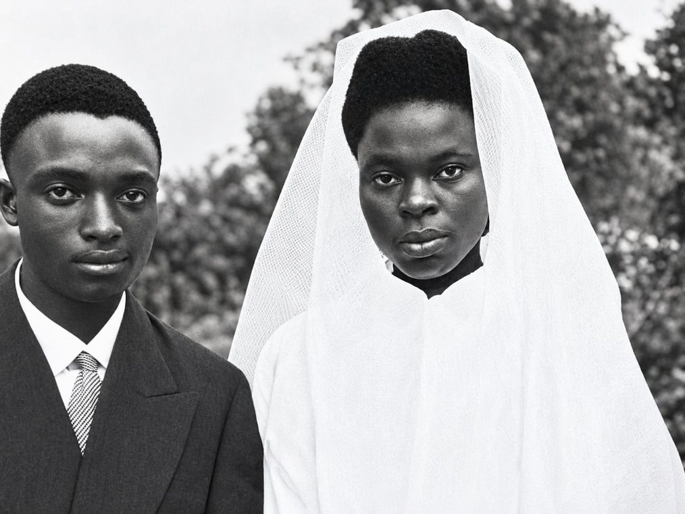
Le jour du mariage, 27 février 1960
Vie familiale et professionnelle
Une fois mariés, Brigitte et Gabriel décident de quitter la masure dans laquelle vivait toute la famille. Ils construisent leur première case en bordure de la route, à l'entrée de Song Ndjiki, d'autant que l'administration coloniale demande à tous les habitants de quitter la brousse et de rejoindre les regroupements.
Très vite, les enfants arrivent. De leur union naîtra une nombreuse progéniture, onze enfants, tous vivants. Papa est ambitieux et travaille à sortir sa famille de l'illettrisme et de la misère. Par sa persévérance, il passera de maître d'école primaire à agrégé et assimilé, catégorie A2 de la fonction publique, hors échelle. Il encadre également ses frères et sœurs, dont certains suivront la voie de l'enseignement.
Il aura été l'un des premiers bacheliers d'Otélé, et celui qui a ouvert la route de l'université dans la famille Log Yu. Professeur d'histoire-géographie, surveillant général au lycée Leclerc à Yaoundé, censeur, inspecteur national de pédagogie, Papa aura eu une longue carrière dans la formation des jeunes. Avec près de trente ans de service dans l'enseignement, du primaire au secondaire, il laisse des milliers d'anciens élèves partout dans le pays. Marafa Hamidou Yaya ou le ministre Etoundi Ngoa, par exemple, sont passés entre ses mains.
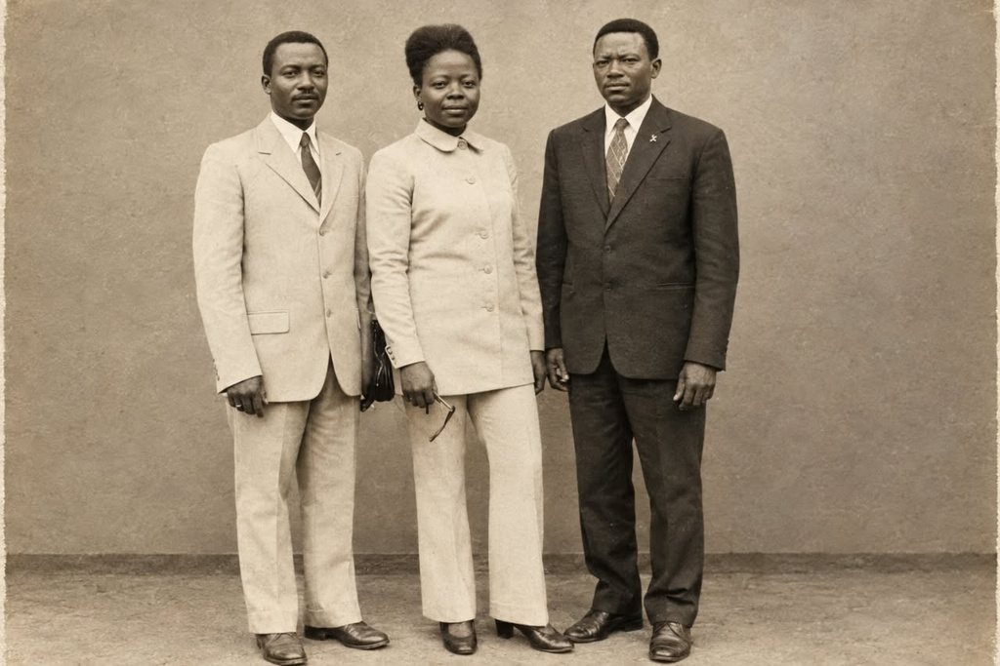
Pendant ce temps, Maman n'est pas en reste. Elle se forme aux soins infirmiers et à la couture, et se lance dans les petits commerces (beignets-haricots-bouillie, bouillon de viande, vin de palme « à trois palmiers »). Elle ouvre même un « circuit » où elle fait à manger. Tout cela pour aider son époux à prendre soin de leurs enfants, mais aussi des autres membres de la famille dont ils ont la charge.
Tout n'a pas toujours été rose, et le couple a connu ses hauts et ses bas. Maman a connu le chagrin, mais gardait tout pour elle. Jamais elle ne nous a laissé voir que la polygamie que lui avait imposée son mari pouvait nuire à notre bien-être. Au contraire, elle nous demandait d'être respectueux envers ses coépouses et de nous concentrer sur nos études.
Les années passent, les enfants grandissent et font à leur tour des enfants. Fille de catéchiste, Maman s'investit dans les études bibliques, avec l'aide de son mari qui l'accompagne chaque samedi pour préparer les résumés des lectures dominicales et les intentions de prière. Elle ira même rencontrer Mgr Jean Zoa pour demander l'intégration des communautés bassa et bamiléké au sein de la paroisse de Nsam.
Engagée, Brigitte Makani a une vie associative bien remplie. Elle est lectrice, dame apostolique, catéchiste, membre de l'Association des âmes du purgatoire, de l'Association des veuves, de l'Ambass, des femmes du Ndog Ngond, etc.
Après le décès de Papa des suites d'une courte maladie en 1992, elle déploie toutes ses forces de mère pour nous encadrer, en demandant l'aide du Seigneur afin d'achever l'œuvre laissée par son mari.
Ce qu'ils nous ont laissé
Leurs valeurs
Brigitte
Une vie de simplicité et de foi
Brigitte était une femme douce, profondément pieuse et d'une générosité rare. Elle a marqué tous ceux qui l'ont croisée par sa simplicité, son sourire constant et son amour inconditionnel pour sa famille.
Un cœur pur. Brigitte ne cherchait jamais les honneurs. Son bonheur se trouvait dans les choses simples du quotidien.
La foi pour boussole. Chaque matin, elle confiait sa journée à Dieu. La prière était son refuge et sa force dans les épreuves.
Une générosité vraie. Sa porte était toujours ouverte. Elle partageait le peu qu'elle avait, avec une main tendue et un mot réconfortant.
Le pilier de la famille. Elle savait rassembler les siens avec patience et tendresse.
Un modèle d'amour. Ses conseils, portés par la sagesse et la bienveillance, restent gravés en nous.
Une lumière éternelle. Même si elle est partie, son souvenir veille sur nous comme une douce présence.
Jean-Gabriel
« Le Petit Blanc des rails »
Surnommé affectueusement « le Petit Blanc des rails », Makouss a marqué tous ceux qui l'ont croisé par sa simplicité et sa force de caractère. Homme de foi et de savoir, il a traversé les épreuves de la vie avec un courage inébranlable, trouvant toujours la lumière au bout du chemin.
Une simplicité désarmante. Il aimait les choses vraies, les rires partagés et le calme des moments simples, loin du superflu.
Une générosité sans limites. Toujours prêt à tendre la main, il donnait sans compter, avec une bienveillance rare.
Une résilience à toute épreuve. Face aux tempêtes de l'existence, il ne s'est jamais écroulé. Il a tenu bon, le dos droit, pour porter les siens.
Un amour familial inouï. Sa famille était son port d'attache, son chef-d'œuvre et sa plus grande fierté.
Un héritage éternel. Le Petit Blanc des rails s'en est allé, mais l'empreinte de Makouss reste gravée dans les cœurs. Il laisse le doux souvenir d'un père protecteur, d'un roc discret et d'un homme au grand cœur dont la lumière ne s'éteindra jamais.
Souvenirs
Anecdotes
Léopoldine Deschambres
Sa fille
J'étais en classe de première au lycée de New-Bell. Mon père était mon censeur, mais aussi mon professeur d'histoire-géographie. Lors d'une interrogation, il nous donna ce sujet : « La France et l'Angleterre à Fachoda ». J'avais cru bien rédiger ma dissertation. « Malet » Makani, comme on l'appelait ici, a ramassé les copies et a commencé par corriger la mienne. Il m'a donné 3/10, soit 6/20… Par malheur, ma mère a vu la note et lui a demandé pourquoi il me notait si durement.
Papa a répliqué qu'il me notait selon mon mérite et non selon ses sentiments, et il a ajouté : « A ngond Étienne, il faut apprendre aux enfants à se débrouiller et à se battre dans la vie. Il faut bien former les enfants, car qui sait, nous ne serons pas éternellement avec eux. »
Pascaline Omgba
Sa fille
J'étais en classe de 3e au CES d'Ekounou. Papa était de passage au collège pour une visite d'inspection, en tant qu'inspecteur national d'histoire-géographie du Centre. J'ai couru naïvement vers lui, contente de le voir mais aussi pour en mettre plein la vue à mes camarades. J'ai été stoppée net : « Mademoiselle Makani, il n'y a pas de papa ici, je suis là pour le travail. »
Marie Édith Ngo Makani
Sa fille
Mama, ma petite Maman. Je me souviendrai toujours de tes retours de la messe de 6 h, de ton ouïe d'agente de la CIA qui démasquait mes petits vols dans la marmite, et de ta fameuse question-piège : « C'est bon dans ta bouche ? » Derrière ta rigueur se cachaient un amour profond et des valeurs précieuses. Aujourd'hui, je comprends que « qui aime bien châtie bien ».
Merci pour la femme que je suis devenue. Tu es mon étoile du matin. Je t'aime d'un amour éternel. À jamais, Maman.
Brigitte Ngo Mboua
Sa petite-fille
Mes grands-parents ont été pour moi bien plus que des grands-parents. Ils ont été des parents, des refuges et des bénédictions. Mon grand-père, qui m'appelait affectueusement « sa femme », a laissé en moi l'empreinte d'un amour qui a comblé l'absence paternelle dont j'ai souffert. Ma grand-mère, dont je porte fièrement le nom, était ma maman, ma confidente, celle qui ne cessait de me dire « Bombo, pourquoi tu ne m'as pas appelée aujourd'hui ? »
Je garde précieusement ses conseils, ses bénédictions et nos repas partagés dans la même assiette, accompagnés de son doux « Bombo, viens, on mange ». Aujourd'hui, dans mes moments difficiles, leur absence me pèse et mes larmes deviennent mes seules paroles. De là où vous êtes, continuez de m'accompagner, de me protéger et de bénir votre petite-fille. Je porte votre amour en moi pour toujours.
Album
En images
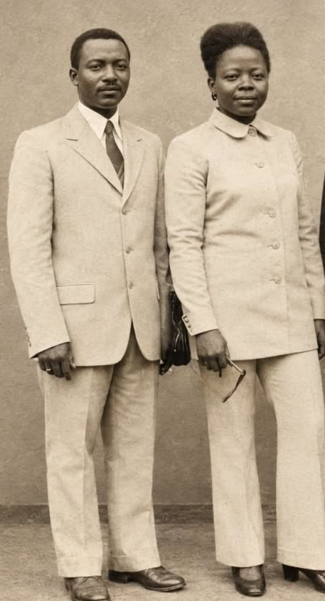
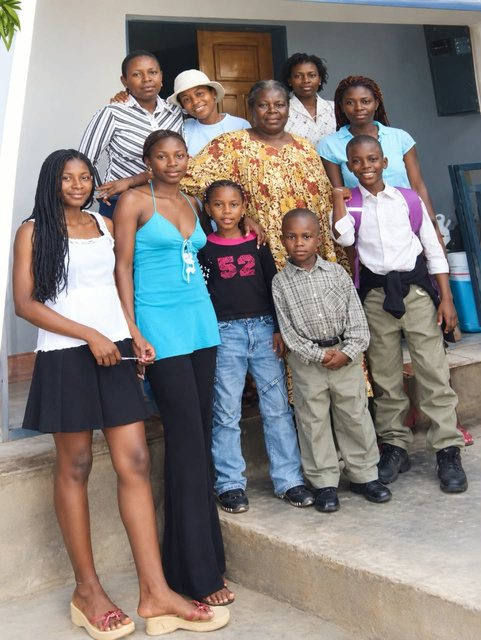
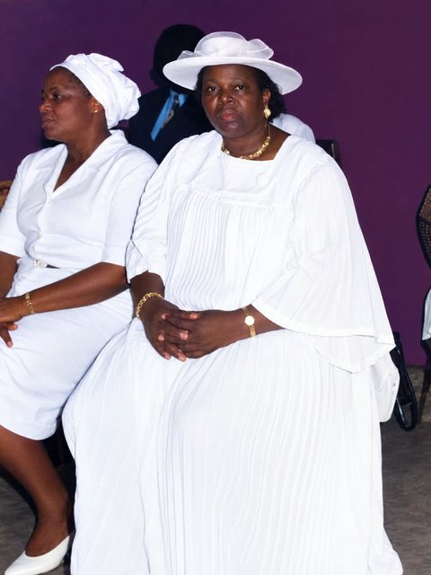
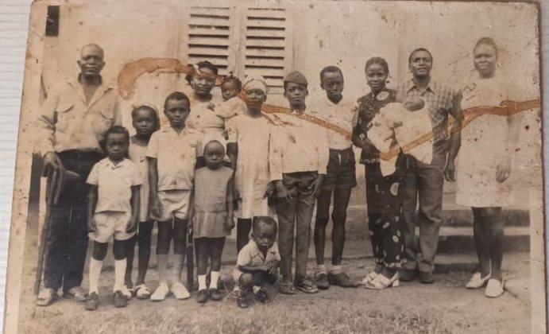
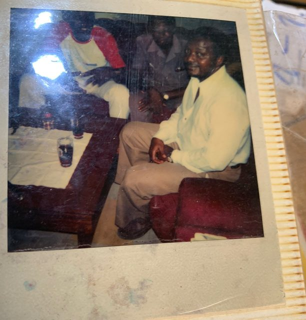
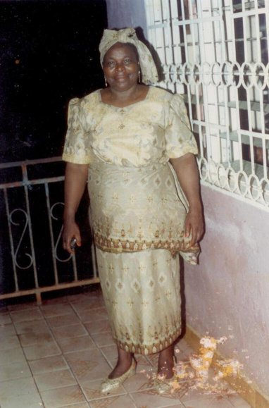
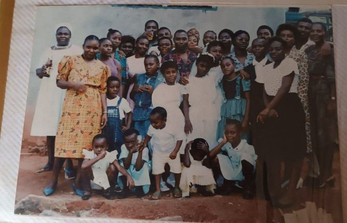
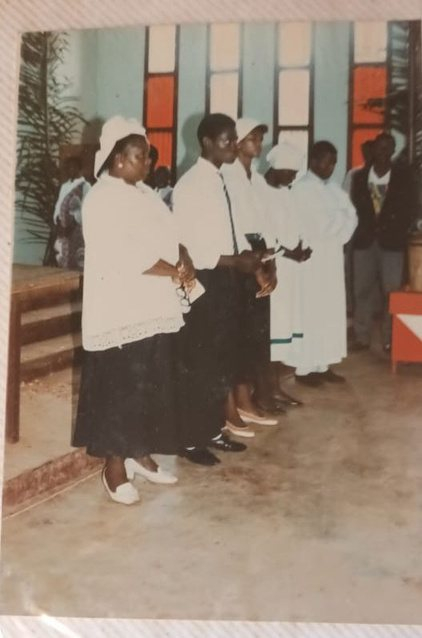
Livre d'or
Laissez un message
Un souvenir, une prière, un mot pour la famille. Votre message sera envoyé à la famille Makani par WhatsApp.
Remerciements
Merci
En votre présence, nous voulons simplement leur dire merci et leur confirmer que nous essayons de pratiquer leurs enseignements, leur éducation, leur amour du prochain, leur bienveillance, leur empathie, leur sens élevé du partage et du respect de l'humain.
Maman, les valeurs que tu nous as inculquées ne nous quitteront jamais. Nous pensons à toi à travers des gestes simples du quotidien, des rituels réguliers et des actions concrètes qui font vivre ta mémoire. Maman, tu as toujours pensé que cette vie terrestre ne mettrait pas un point final à ton existence. Si ton souhait a été exaucé, si tu peux nous voir ou nous entendre, nous savons que tu seras à la fois heureuse et confuse que tes enfants parlent de toi ainsi.
Papa, tu as instruit, construit, aimé et partagé. Nous ne cesserons jamais de te remercier pour tout ce que tu nous as transmis. Ta sagesse nous guide encore, tes conseils résonnent toujours à nos oreilles. Parti sans prévenir, tu nous as laissés dans l'incompréhension, mais ton souvenir reste intact.
Tu as été notre pilier. Merci pour chaque leçon, chaque blague, tous les sourires et tous les sacrifices. Tu resteras à jamais notre héros discret. À toi qui nous as tout donné, nous promettons de transmettre tes valeurs à nos enfants. Papa, héros, ta mémoire guide et guidera nos pas chaque jour. Ton départ a laissé un vide immense dans notre famille, mais tu avais déjà rempli nos vies de tant de richesses.
Nous ne vous oublierons jamais.
La famille remercie chaleureusement toutes les personnes qui, par leur présence, leurs messages ou leurs pensées, s'associent à cette célébration.